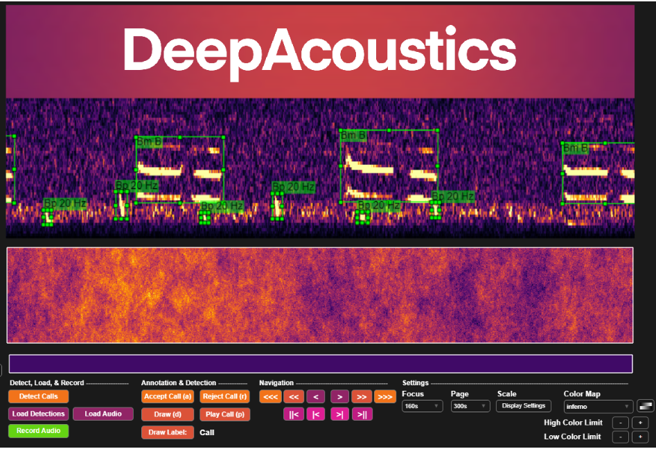

Baleen Whales
Summary
The CalCurCEAS baleen whale analysis used a multi-class TinyYOLO detector trained with DeepAcoustics, to identify low-frequency calls from blue, fin, and sei whales in drifting-recorder data collected during the 2024 survey. The detector was adapted from an existing base model using additional annotations from two representative CalCurCEAS deployments — 008 (offshore) and 014 (nearshore) — so it reflected the acoustic conditions of this survey before being applied more broadly. Recordings were first screened for data-quality problems, then decimated to 400 Hz before detection.
Six focal call types were evaluated:
- Blue whale A, B, and D calls
- Fin whale 20 Hz and 40 Hz calls
- Sei whale downsweeps (Sei DS)
From there, the analysis followed two complementary paths. In the first, detector output was binned by hour and each hour was manually reviewed to produce a validated hourly presence/absence dataset for each call type; this dataset was used for acoustic-occurrence analyses products. In the second, detector performance was evaluated at the individual-call level against held-out CalCurCEAS recordings not used in training, and only call types with a pooled F1-score of at least 0.80 were carried forward into secondary analyses, consisting of effort-normalized automated call activity. Environmental comparisons were then conducted as an exploratory extension of those retained, automated call-level analyses.
Acoustic preprocessing and data-quality screening
For the baleen whale analyses, only channel one of each recording (HTI-92WB hydrophone) was used. Recordings were decimated from the original 384-kHz sampling rate to 400 Hz using Triton. This reduced data volume while retaining the frequency range needed to detect the focal low-frequency baleen whale calls and matched the input sampling rate used for the DeepAcoustics detector.
Long-term spectral averages (LTSAs) were generated for each deployment and visually reviewed to identify recording-quality problems. Periods affected by instrument self-noise, line strumming, or other low-frequency interference that prevented reliable detection of the target calls were annotated as unusable and excluded from subsequent analyses. Deployments with persistent unusable conditions could be excluded in their entirety.
Confirmed data gaps in acoustic recording were also accounted for when constructing the final analysis products. The validated hourly-occurrence workflow and the automated call-activity workflow handled usable effort differently: hourly occurrence used eligible full hour bins, whereas automated call activity retained exact usable recording duration, including usable portions of partial hours.
DeepAcoustics model development

DeepAcoustics is a MATLAB-based software package for training and applying deep-learning object-detection networks to acoustic data. Prior model development by Ocean Science Analytics identified TinyYOLO as an effective architecture for a multiclass low-frequency baleen whale detector. That existing detector provided the starting point for the CalCurCEAS model rather than developing a new network from scratch.
To adapt the detector to CalCurCEAS acoustic conditions, recordings from CalCurCEAS_008 and CalCurCEAS_014 were fully annotated for focal call types and incorporated into the training data. These deployments represented different acoustic environments and were supplemented with additional sei whale downsweep annotations from sonobuoy recordings. The broader training dataset included recordings from multiple passive acoustic monitoring platforms and environments.
The six focal call classes used in the CalCurCEAS analysis were Blue A, Blue B, Blue D, Fin 20 Hz, Fin 40 Hz, and Sei DS. Fin whale 18 Hz calls and an unidentified biological sound class (UNID) were also represented during model training but were not retained for the downstream biological analyses.
Annotated calls were converted to 400-Hz spectrogram images for TinyYOLO training. Training images used 40-s spectrogram windows with 80% overlap, a 256-point FFT, and 320 × 320-pixel image resolution. Noise samples were incorporated during image generation, and selected training datasets were augmented to increase representation of underrepresented call classes. Augmented samples increased the number and diversity of training images but did not represent additional independent whale calls or recordings.
Multiple candidate TinyYOLO networks were evaluated, and Network 17 was selected as the final 400-Hz multiclass detector (Final TinyYOLO detector) based on performance across the focal call classes and evaluation datasets rather than performance for any single class.
The final TinyYOLO detector and accompanying documentation are archived in supplement/BaleenWhales/.
Application to novel CalCurCEAS recordings
The final TinyYOLO detector was applied to the CalCurCEAS deployments retained for baleen whale analysis except CalCurCEAS_008 and CalCurCEAS_014, because those recordings had contributed to model training.
DeepAcoustics generated individual detections with predicted call classes and confidence scores. Detections meeting the 0.5 minimum confidence threshold used in the DeepAcoustics workflow were retained. Detections occurring during periods identified as unusable during data-quality screening were excluded from the downstream analysis products.
Call-level detector performance
Detector performance on novel CalCurCEAS recordings was evaluated using a stratified manual review of approximately 20% of the usable 6-min recording files from each novel deployment. Each deployment was divided into approximately ten temporal bins, and files were randomly selected within those bins so that review effort was distributed across the deployment rather than concentrated in a single time period.
For each sampled subset, the original DeepAcoustics detections were compared with an analyst-reviewed Raven selection table. Automated detections retained during review were classified as true positives (TP), detections removed during review as false positives (FP), and calls added manually because they had been missed by the detector as false negatives (FN).
Precision, recall, and F1-score were calculated at two scales:
- deployment level, to characterize variation in detector performance among deployments and acoustic environments; and
- pooled by call type, by summing TP, FP, and FN across novel deployments before calculating the performance metrics.
The pooled call-type performance was used to determine which automated call classes were sufficiently reliable for secondary unreviewed call-level analyses. A pooled F1-score ≥ 0.80 was used as the retention criterion, which retained Blue A, Blue B, and Fin 20 Hz. Blue D, Fin 40 Hz, and Sei DS remained part of the manually validated hourly occurrence dataset but were not used for quantitative analyses of unreviewed automated call counts.
The reproducible detector-performance workflow is available in _code/baleen_whales/detector_performance/.
Validated hourly acoustic occurrence
The manually validated hourly dataset was the primary data product for acoustic-occurrence analyses.
For deployments processed with the final TinyYOLO detector, automated detections were first summarized into full hour bins by call type. A call type was initially considered present when at least one detector output occurred within the hour. For CalCurCEAS_008 and CalCurCEAS_014, hourly presence/absence was derived from the existing analyst annotations because those deployments were fully annotated during model development.
These initial hourly classifications were only a starting point. Each hourly interval was manually reviewed for each focal call type, including hours in which the detector produced no detections, so that missed calls could be identified. The analyst then assigned final binary presence/absence values for Blue A, Blue B, Blue D, Fin 20 Hz, Fin 40 Hz, and Sei DS. Individual call counts were not manually corrected as part of this hourly-occurrence product.
Hourly bins overlapping unusable recording periods or confirmed recording interruptions were excluded from the validated occurrence analysis. The retained bins are designated Validated Analysis Hours in the final public dataset.
Species-level occurrence was derived from the validated call-type fields:
- Blue whale: Blue A, Blue B, or Blue D present;
- Fin whale: Fin 20 Hz or Fin 40 Hz present; and
- Sei whale: Sei DS present.
An hourly value of absence indicates that no focal vocalization was detected during analyst review of that hour. It should not be interpreted as evidence that the species was biologically absent from the area.
For regional summaries, geographic zone was assigned from the hourly recorder position, rather than assigning each deployment to a single region. A drifting recorder could therefore contribute hours to more than one geographic zone.
The reproducible validated-occurrence workflow is available in _code/baleen_whales/validated_hourly_occurrence/.
Relative automated call activity
Automated call-level detections were used as a secondary measure of relative acoustic activity for the three retained call classes: Blue A, Blue B, and Fin 20 Hz.
These analyses excluded the two CalCurCEAS training deployments (008 and 014). For each hourly bin, exact usable acoustic effort was retained in minutes, and detections occurring within documented unusable intervals were excluded. This allowed usable portions of partially affected hours to contribute to the call-activity analysis.
Relative acoustic activity was expressed as:
detection rate = retained automated detections / usable recording hours
Detection rates were compared only within the same call type among geographic zones or along drifter trajectories. They were not interpreted as estimates of whale abundance, whale density, or true call production, and rates were not compared directly among call types because call characteristics, detectability, and detector performance differ among classes.
The reproducible workflow is available in _code/baleen_whales/relative_call_activity/.
Exploratory environmental analysis
Environmental analyses were conducted as an exploratory extension of the retained automated call-activity data. Blue A and B detections were combined as an index of blue whale song-associated activity, while Fin 20 Hz detections were evaluated separately.
Hourly drifter positions were paired with environmental covariates including:
- GEBCO bathymetric depth;
- sea-surface temperature (MUR SST);
- chlorophyll-a;
- phytoplankton carbon;
- particulate organic carbon (POC); and
- net primary productivity (PACE NPP CAFE).
Concurrent NPP and nominal 30-, 60-, 90-, and 120-day NPP lags were examined. Satellite values were extracted from the nearest available daily product within the search windows used in the analysis, using the median of a 3 × 3 pixel neighborhood around each hourly drifter position. Missing satellite observations were retained as missing rather than interpolated.
For the regional California comparisons, hourly detection counts were classified separately for each call metric and geographic zone as:
- high-call: counts at or above the zone-specific 75th percentile;
- low-call: one or more detections below that threshold; or
- no-call: zero retained detections.
The 75th-percentile threshold was calculated using all hourly bins in each call-metric × geographic-zone group, including zero-detection hours. These categories therefore represent relative acoustic activity within a geographic zone and are not directly comparable among species or zones.
No statistical significance testing or habitat modeling was conducted. Environmental results were interpreted as descriptive, survey-specific context rather than evidence of habitat preference or causal environmental drivers.
The finalized environmental dataset and regional summaries are stored in supplement/BaleenWhales/, and the reproducible workflow is available in _code/baleen_whales/environmental_analysis/.
Code and reproducible products
The finalized baleen whale analysis is organized into four reproducible workflow folders:
Final reusable datasets and the Final TinyYOLO detector are archived in supplement/BaleenWhales/, and final rendered figures are stored under _figs/BaleenWhales/.
See the Baleen Whale Results page for the final occurrence, detector-performance, relative call-activity, and environmental results.